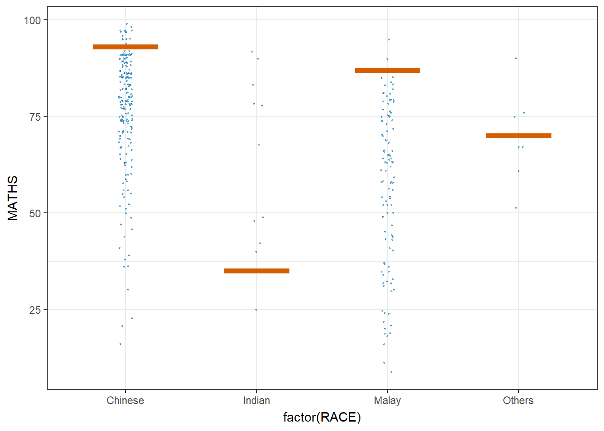

6 Visualise Uncertainty
Hands-On Exercise for Week 4
(First Published: 4-May-2023)
6.1 Learning Outcome
A point estimate, such as mean, is a single numerical value that is used to estimate an unknown population parameter. On the other hand, a range estimate is a range of values that is used to estimate an unknown population parameter. A range estimate is useful when a single point estimate is not precise enough, or when we want to communicate the level of uncertainty surrounding the point estimate.
In this exercise, we will explore approaches to visualise the uncertainty of point estimates.
6.2 Getting Started
6.2.1 Install and load the required r libraries
Install and load the the required R packages. The name and function of the new package that will be used for this exercise is as follow:
- ggdist: provides a range of functions for creating visualizations of probability distributions
- knitr: create high-quality, fully reproducible documents that integrate code, text, and graphics
6.2.2 Import the data
We will be using the same exam scores data-set that was featured in my Hands-On Exercise for Week 1.
6.3 Visualise the uncertainty of point estimates with ggplot2 package
First, we perform with following on the exam scores data-set:
group the observations by RACE,
compute the count of observations, mean, standard deviation and standard error of Maths scores by RACE, and
assign the output as a tibble data table called `my_sum
print the tibble data using
kable()function from knitr
Show the code
| RACE | n | mean | sd | se |
|---|---|---|---|---|
| Chinese | 193 | 76.50777 | 15.69040 | 1.132357 |
| Indian | 12 | 60.66667 | 23.35237 | 7.041005 |
| Malay | 108 | 57.44444 | 21.13478 | 2.043177 |
| Others | 9 | 69.66667 | 10.72381 | 3.791438 |
We can use the geom_errorbar() function to reveal the standard error of mean maths score by race in the following chart.
Show the code
Check out this plot which we did in an earlier exercise.
We can also use the geom_errorbar() function to reveal the 95% Confidence Interval of the mean maths score by race in the following chart.
# Calculate the lower and upper bound for confidence intervals
my_sum2 <- my_sum %>%
mutate(lower_ci = mean - qt(0.975, n-1)*se,
upper_ci = mean + qt(0.975, n-1)*se)
# Create point estimate plot with error bars
ggplot(my_sum2) +
geom_errorbar(
aes(x=reorder(RACE,-mean),
ymin=lower_ci,
ymax=upper_ci),
width=0.2,
colour="black",
alpha=0.9,
linewidth=0.5) +
geom_point(aes
(x=RACE,
y=mean),
stat="identity",
color="red",
size = 1.5,
alpha=1) +
labs(title="95% Confidence Interval of the Mean Math Scores by Race",
x = "Race",
y = "Math Score")6.3.1 Visualise the uncertainty of point estimates with interactive error bars
The following interactive error bar plot shows the 99% Confidence Interval of mean maths score by race.
( üñ±Ô∏èClick on the average score (in red) for the cross-filtering to work)
Show the code
# Prepare the summary table with the relevant stats
my_sum3 <- exam %>%
group_by(RACE) %>%
summarise(
'No. of pupils'=n(),
'Avg Scores'=mean(MATHS),
'Std Dev'=sd(MATHS),
'Std Error' = sd(MATHS)/sqrt(n()-1)
)
# Use highlight_key() to add a unique key to the data frame my_sum3 so that it can be linked to interactive plots later
d <- highlight_key(my_sum3)
# Prepare the error bar plot
p <- ggplot(d) +
geom_errorbar(
aes(x=reorder(RACE,-`Avg Scores`),
ymin=`Avg Scores` - qt(0.995, `No. of pupils`-1)*`Std Error`,
ymax=`Avg Scores` + qt(0.995, `No. of pupils`-1)*`Std Error`),
width=0.2,
colour="black",
alpha=0.9,
linewidth=0.5) +
geom_point(aes
(x=RACE,
y=`Avg Scores`,
text = paste("Race:", `RACE`,
"<br>N:", `No. of pupils`,
"<br>Avg. Scores:", round(`Avg Scores`, digits = 2),
"<br>95% CI:[",
round((`Avg Scores` - qt(0.995, `No. of pupils`-1)*`Std Error`), digits = 2), ",",
round((`Avg Scores` + qt(0.995, `No. of pupils`-1)*`Std Error`), digits = 2),"]")),
stat="identity",
color="red",
size = 1.5,
alpha=1) +
labs(title="99% Confidence Interval of the Mean Math Scores by Race",
x = "Race",
y = "Math Score")
# Convert ggplot to an interactive plotly plot using the ggplotly(), "plotly click" specifies that highlight should be based on click
gg <- highlight(ggplotly(p),on =
"plotly_click")
# Create a Bootstrap grid of two columns to house the 2 plots in the ratio of 5:7
bscols(gg,datatable(d,options = list(dom='t')),widths = c(5,7))6.4 Visualising Uncertainty using ggdist package
ggdist is an R package that provides a flexible set of ggplot2 geoms and stats designed especially for visualising distributions and uncertainty. It is designed for both frequentist and Bayesian uncertainty visualization, taking the view that uncertainty visualization can be unified through the perspective of distribution visualization:
for frequentist models, one visualises confidence distributions or bootstrap distributions (see vignette(“freq-uncertainty-vis”));
for Bayesian models, one visualises probability distributions (see the tidybayes package, which builds on top of ggdist).
We use the stat_pointinterval() of ggdist to build a visual for displaying distribution of maths scores by race.
Show the code
This stat_pointinterval() function comes with many arguments. The following plot creates a plot that displays the median math score for each race group, along with an interval estimate for each group. This can help visualize the differences in math scores across different racial groups and also the variability within each group.
Show the code

We can use the stat_gradientinterval() function of ggdist to build a visual for displaying distribution of maths scores by race.

6.5 Visualise Uncertainty with Hypothetical Outcome Plots (HOPs)
The ungeviz package is meant to provide helpful add-on functionality for ggplot2 to visualize uncertainty. The package is particularly focused on hypothetical outcome plots (HOPs) and provides bootstrapping and sampling functionality that integrates well with the ggplot2 API.
Step 1: Install the ungeviz package
The installation should only be carried out once.
Step 2: Launch the application in R
Show the code

The sampler() function generates sampling and bootstrapping exam scores repeatedly and these scores are used as input data in ggplot2 layer. This helps to create the hypothetical outcome plot.
\(**That's\) \(all\) \(folks!**\)